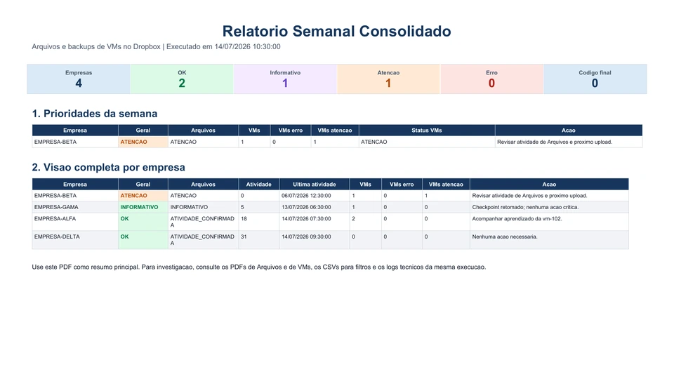

Em uso
Auditor de Backups Dropbox
Auditoria incremental de arquivos e backups de VMs armazenados.
Ver detalhes →Catálogo técnico
Projetos aplicados a backup, suporte, infraestrutura, monitoramento e segurança defensiva.

Auditoria incremental de arquivos e backups de VMs armazenados.
Ver detalhes →
Inventário, suporte, auditoria e resposta inicial com execução controlada.
GitHub →